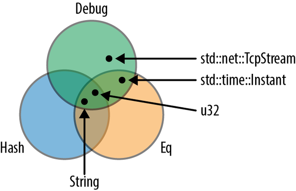

Chapter 11. Traits and Generics
[A] computer scientist tends to be able to deal with nonuniform structures—case 1, case 2, case 3—while a mathematician will tend to want one unifying axiom that governs an entire system.
Donald Knuth
One of the great discoveries in programming is that it’s possible to write code that operates on values of many different types, even types that haven’t been invented yet. Here are two examples:
-
Vec<T>is generic: you can create a vector of any type of value, including types defined in your program that the authors ofVecnever anticipated. -
Many things have
.write()methods, includingFiles andTcpStreams. Your code can take a writer by reference, any writer, and send data to it. Your code doesn’t have to care what type of writer it is. Later, if someone adds a new type of writer, your code will already support it.
Of course, this capability is hardly new with Rust. It’s called polymorphism, and it was the hot new programming language technology of the 1970s. By now it’s effectively universal. Rust supports polymorphism with two related features: traits and generics. These concepts will be familiar to many programmers, but Rust takes a fresh approach inspired by Haskell’s typeclasses.
Traits are Rust’s take on interfaces or abstract base classes. At first, they look just like interfaces in Java or C#. The trait for writing bytes is called std::io::Write, and its definition in the standard library starts out like this:
traitWrite{fnwrite(&mutself,buf:&[u8])->Result<usize>;fnflush(&mutself)->Result<()>;fnwrite_all(&mutself,buf:&[u8])->Result<()>{...}...}
This trait offers several methods; we’ve shown only the first three.
The standard types File and TcpStream both implement std::io::Write. So does Vec<u8>. All three types provide methods named .write(), .flush(), and so on. Code that uses a writer without caring about its type looks like this:
usestd::io::Write;fnsay_hello(out:&mutdynWrite)->std::io::Result<()>{out.write_all(b"hello world\n")?;out.flush()}
The type of out is &mut dyn Write, meaning “a mutable reference to any value that implements the Write trait.” We can pass say_hello a mutable reference to any such value:
usestd::fs::File;letmutlocal_file=File::create("hello.txt")?;say_hello(&mutlocal_file)?;// worksletmutbytes=vec![];say_hello(&mutbytes)?;// also worksassert_eq!(bytes,b"hello world\n");
This chapter begins by showing how traits are used, how they work, and how to define your own. But there is more to traits than we’ve hinted at so far. We’ll use them to add extension methods to existing types, even built-in types like str and bool. We’ll explain why adding a trait to a type costs no extra memory and how to use traits without virtual method call overhead. We’ll see that built-in traits are the hook into the language that Rust provides for operator overloading and other features. And we’ll cover the Self type, associated functions, and associated types, three features Rust lifted from Haskell that elegantly solve problems that other languages address with workarounds and hacks.
Generics are the other flavor of polymorphism in Rust. Like a C++ template, a generic function or type can be used with values of many different types:
/// Returns the lesser of two values.fnmin<T:Ord>(value1:T,value2:T)->T{ifvalue1<=value2{value1}else{value2}}
The <T: Ord> in this function means that min can be used with arguments of any type T that implements the Ord trait—that is, any ordered type. A requirement like this is called a bound, because it sets limits on which types T could possibly be. The compiler generates custom machine code for each type T that you actually use.
In Python and JavaScript, all functions work this way naturally: a function can operate on any value that has the properties and methods the function will need. (This is the characteristic often called duck typing: if it quacks like a duck, it’s a duck.) But it’s exactly this flexibility that makes it so difficult for those languages to detect type errors early; testing is often the only way to catch such mistakes. Rust’s generics give the language a degree of the same flexibility, while still catching all type errors at compile time.
Despite their flexibility, generic functions are just as efficient as their nongeneric counterparts. There is no inherent performance advantage to be had from writing, say, a specific min function for each integer type, over writing a generic one that handles all integers.
Generics and traits are closely related: generic functions use traits in bounds to spell out what types of arguments they can be applied to. So we’ll also talk in this chapter about how &mut dyn Write and <T: Write> are similar, how they’re different, and how to choose between these two ways of using traits.
Using Traits
A trait is a feature that any given type may or may not support. Most often, a trait represents a capability: something a type can do.
-
A value that implements
std::io::Writecan write out bytes. -
A value that implements
std::iter::Iteratorcan produce a sequence of values. -
A value that implements
std::clone::Clonecan make clones of itself in memory. -
A value that implements
std::fmt::Debugcan be printed usingprintln!()with the{:?}format specifier.
Those four traits are all part of Rust’s standard library, and many standard types implement them. For example:
-
std::fs::Fileimplements theWritetrait; it writes bytes to a local file.std::net::TcpStreamwrites to a network connection.Vec<u8>also implementsWrite. Each.write()call on a vector of bytes appends some data to the end. -
Range<i32>(the type of0..10) implements theIteratortrait, as do some iterator types associated with slices, hash tables, and so on. -
Most standard library types implement
Clone. The exceptions are mainly types likeTcpStreamthat represent more than just data in memory. -
Likewise, most standard library types support
Debug.
There is one unusual rule about trait methods: the trait itself must be in scope. Otherwise, all its methods are hidden:
letmutbuf:Vec<u8>=vec![];buf.write_all(b"hello")?;// error: no method named `write_all`
In this case, the compiler prints a friendly error message that suggests adding use std::io::Write; and indeed that fixes the problem:
usestd::io::Write;letmutbuf:Vec<u8>=vec![];buf.write_all(b"hello")?;// ok
Rust has this rule because, as we’ll see later in this chapter, you can use traits to add new methods to any type—even standard library types like u32 and str. Third-party crates can do the same thing. Clearly, this could lead to naming conflicts! But since Rust makes you import the traits you plan to use, crates are free to take advantage of this superpower. To get a conflict, you’d have to import two traits that add a method with the same name to the same type. This is rare in practice. (If you do run into a conflict, you can spell out what you want using fully qualified method syntax, covered later in the chapter.)
The reason Clone and Iterator methods work without any special imports is that they’re always in scope by default: they’re part of the standard prelude, names that Rust automatically imports into every module. In fact, the prelude is mostly a carefully chosen selection of traits. We’ll cover many of them in Chapter 13.
C++ and C# programmers will already have noticed that trait methods are like virtual methods. Still, calls like the one shown above are fast, as fast as any other method call. Simply put, there’s no polymorphism here. It’s obvious that buf is a vector, not a file or a network connection. The compiler can emit a simple call to Vec<u8>::write_all(). It can even inline the method. (C++ and C# will often do the same, although the possibility of subclassing sometimes precludes this.) Only calls through &mut dyn Write incur the overhead of a dynamic dispatch, also known as a virtual method call, which is indicated by the dyn keyword in the type.
There are two ways of using traits to write polymorphic code in Rust: dyn and generics. We’ll present dyn first.
Using dyn
The value that a dyn reference refers to is called a trait object. For example, the say_hello function we showed earlier takes an argument out of type &mut dyn Write. This argument refers to a trait object of type dyn Write, which could be a Vec<u8>, a File, or any other kind of writer.
Rust doesn’t permit variables of type dyn Write:
usestd::io::Write;letmutbuf:Vec<u8>=vec![];letwriter:dynWrite=buf;// error: size of `dyn Write` cannot be known// at compilation time
A variable’s size has to be known at compile time, and types that implement Write can be any size.
References have a constant size, and so do Boxes and other smart pointer types.
letmutbuf:Vec<u8>=vec![];letwriter:&mutdynWrite=&mutbuf;// okletboxed_writer:Box<dynWrite>=Box::new(buf.clone());// ok
Like any other reference, a dyn reference points to some value, it has a lifetime, and it can be either mut or shared. What makes a dyn reference different is that Rust usually doesn’t know the type of the referent at compile time. So a reference to a trait object includes a little extra information about the referent’s type. This is strictly for Rust’s own use behind the scenes: when you call writer.write(data), Rust needs the type information to dynamically call the right write method depending on the type of *writer. You can’t query the type information directly, and Rust does not support downcasting from &mut dyn Write back to a specific writer type like &mut Vec<u8>.
dyn Reference Layout
There’s nothing fancy about the way a dyn Write value is stored in memory. Its layout is exactly the same as a File, or Vec<u8>, or whatever type of writer the value actually is. But a reference to a dyn value is a little different from other references.
In memory, a dyn reference is a fat pointer consisting of a pointer to the value, plus a pointer to a table representing that value’s type. Each dyn reference therefore takes up two machine words, as shown in Figure 11-1.

Figure 11-1. dyn references in memory
C++ has this kind of run-time type information as well. It’s called a virtual table, or vtable. In Rust, as in C++, the vtable is generated once, at compile time, and shared by all objects of the same type. Everything shown in the darker shade in Figure 11-1, including the vtable, is a private implementation detail of Rust. Again, these aren’t fields and data structures that you can access directly. Instead, the language automatically uses the vtable when you call a method of a trait object, to determine which implementation to call.
Seasoned C++ programmers will notice that Rust and C++ use memory a bit differently. In C++, the vtable pointer, or vptr, is stored as part of the struct. Rust uses fat pointers instead. The struct itself contains nothing but its fields. This way, a struct can implement dozens of traits without containing dozens of vptrs. Even types like i32, which aren’t big enough to accommodate a vptr, can implement traits.
Rust automatically converts ordinary references into dyn references when needed. This is why we’re able to pass &mut local_file to say_hello in this example:
letmutlocal_file=File::create("hello.txt")?;say_hello(&mutlocal_file)?;
The type of &mut local_file is &mut File, and the type of the argument to say_hello is &mut dyn Write. Since a File is a kind of writer, Rust allows this, automatically converting the plain reference to a dyn reference.
Likewise, Rust will happily convert a Box<File> to a Box<dyn Write>, a value that owns a writer in the heap:
letw:Box<dynWrite>=Box::new(local_file);
Box<dyn Write>, like &mut dyn Write, is a fat pointer: it contains the address of the writer itself and the address of the vtable. The same goes for other pointer types, like Rc<dyn Write>.
This kind of conversion is the only way to create a dyn pointer. What the compiler is actually doing here is very simple. At the point where the conversion happens, Rust knows the referent’s true type (in this case, File), so it just adds the address of the appropriate vtable, turning the regular pointer into a fat pointer.
Generic Functions and Type Parameters
At the beginning of this chapter, we showed a say_hello() function that took a dyn reference as an argument. Let’s rewrite that function as a generic function:
fnsay_hello<W:Write>(out:&mutW)->std::io::Result<()>{out.write_all(b"hello world\n")?;out.flush()}
Only the type signature has changed:
fnsay_hello(out:&mutdynWrite)// plain functionfnsay_hello<W:Write>(out:&mutW)// generic function
The phrase <W: Write> is what makes the function generic. This is a type parameter. It means that throughout the body of this function, W stands for some type that implements the Write trait. Type parameters are usually single uppercase letters, by convention.
Which type W stands for depends on how the generic function is used:
say_hello(&mutlocal_file)?;// calls say_hello::<File>say_hello(&mutbytes)?;// calls say_hello::<Vec<u8>>
When you pass &mut local_file to the generic say_hello() function, you’re calling say_hello::<File>(). Rust generates machine code for this function that calls File::write_all() and File::flush(). When you pass &mut bytes, you’re calling say_hello::<Vec<u8>>(). Rust generates separate machine code for this version of the function, calling the corresponding Vec<u8> methods. This process is called monomorphization, and the compiler handles it all automatically.
In both of these function calls, Rust infers the type W from the type of the argument. However, you can always spell out the type parameters:
say_hello::<File>(&mutlocal_file)?;
This is seldom necessary, because Rust can usually deduce the type parameters by looking at the arguments. Here, the say_hello generic function expects a &mut W argument, and we’re passing it a &mut File, so Rust infers that W = File.
If the generic function you’re calling doesn’t have any arguments that provide useful clues, you may have to spell it out:
// calling a generic method collect<C>() that takes no argumentsletv1=(0..1000).collect();// error: can't infer typeletv2=(0..1000).collect::<Vec<i32>>();// ok
Sometimes we need multiple abilities from a type parameter. For example, if we want to print out the top ten most common values in a vector, we’ll need for those values to be printable:
usestd::fmt::Debug;fntop_ten<T:Debug>(values:&Vec<T>){...}
But this isn’t good enough. How are we planning to determine which values are the most common? The usual way is to use the values as keys in a hash table. That means the values need to support the Hash and Eq operations. The bounds on T must include these as well as Debug. The syntax for this uses the + sign:
usestd::fmt::Debug;usestd::hash::Hash;fntop_ten<T:Debug+Hash+Eq>(values:&Vec<T>){...}
Some types implement Debug, some implement Hash, some support Eq, and a few, like u32 and String, implement all three, as shown in Figure 11-2.

Figure 11-2. Traits as sets of types
It’s also possible for a type parameter to have no bounds at all, but you can’t do much with a value if you haven’t specified any bounds for it. You can move it. You can put it into a box or vector. That’s about it.
Generic functions can have multiple type parameters:
/// Runs a query on a large, partitioned data set./// See <http://research.google.com/archive/mapreduce.html>.fnrun_query<M:Mapper+Serialize,R:Reducer+Serialize>(data:&DataSet,map:M,reduce:R,)->Results{...}
As this example shows, the bounds can get to be so long that they are hard on the eyes. Rust provides an alternative syntax using the keyword where:
fnrun_query<M,R>(data:&DataSet,map:M,reduce:R)->ResultswhereM:Mapper+Serialize,R:Reducer+Serialize,{...}
The type parameters M and R are still declared up front, but the bounds are moved to separate lines. This kind of where clause is also allowed on generic structs, enums, type aliases, and methods—anywhere bounds are permitted.
Of course, an alternative to where clauses is to keep it simple: find a way to write the program without using generics quite so intensively.
“Receiving References as Function Arguments” introduced the syntax for lifetime parameters. A generic function can have both lifetime parameters and type parameters. Lifetime parameters come first:
/// Returns a reference to the point in `candidates` that's/// closest to the `target` point.fnnearest<'t,'c,P>(target:&'tP,candidates:&'c[P])->&'cPwhereP:MeasureDistance,{...}
This function takes two arguments, target and candidates. Both are references, and we give them distinct lifetimes 't and 'c (as discussed in “Distinct Lifetime Parameters”). Furthermore, the function works with any type P that implements the MeasureDistance trait, so we might use it on Point2d values in one program and Point3d values in another.
Lifetimes never have any impact on machine code. Two calls to nearest() using the same type P, but different lifetimes, will call the same compiled function. Only differing types cause Rust to compile multiple copies of a generic function.
In addition to types and lifetimes, generic functions can take constant parameters as well, like the Polynomial struct we presented in “Generic Structs with Constant Parameters”:
fndot_product<constN:usize>(a:[f64;N],b:[f64;N])->f64{letmutsum=0.;foriin0..N{sum+=a[i]*b[i];}sum}
Here, the phrase <const N: usize> indicates that the function dot_product expects a generic parameter N, which must be a usize. Given N, the function takes two arguments of type [f64; N], and adds up the products of their corresponding elements. What distinguishes N from an ordinary usize argument is that you can use it in the types in dot_product’s signature or body.
As with type parameters, you can either provide constant parameters explicitly, or let Rust infer them:
// Explicitly provide `3` as the value for `N`.dot_product::<3>([0.2,0.4,0.6],[0.,0.,1.])// Let Rust infer that `N` must be `2`.dot_product([3.,4.],[-5.,1.])
Of course, functions are not the only kind of generic code in Rust:
-
We’ve already covered generic types in “Generic Structs” and “Generic Enums”.
-
An individual method can be generic, even if the type it’s defined on is not generic:
implPancakeStack{fnpush<T:Topping>(&mutself,goop:T)->PancakeResult<()>{goop.pour(self);self.absorb_topping(goop)}} -
Type aliases can be generic, too:
typePancakeResult<T>=Result<T,PancakeError>; -
We’ll cover generic traits later in this chapter.
All the features introduced in this section—bounds, where clauses, lifetime parameters, and so forth—can be used on all generic items, not just functions.
Which to Use
The choice of whether to use dyn or generics is subtle. Since both features are based on traits, they have a lot in common.
dyn is the right choice whenever you need a collection of values of mixed types, all together. It is technically possible to make generic salad:
traitVegetable{...}structSalad<V:Vegetable>{veggies:Vec<V>,}
However, this is a rather severe design. Each such salad consists entirely of a single type of vegetable. Not everyone is cut out for this sort of thing. One of your authors once paid $14 for a Salad<IcebergLettuce> and has never quite gotten over the experience.
How can we build a better salad? Since Vegetable values can be all different sizes, we can’t ask Rust for a Vec<dyn Vegetable>:
structSalad{veggies:Vec<dynVegetable>,// error: size of `dyn Vegetable` cannot be// known at compilation time}
The solution is to use a Box for each Vegetable:
structSalad{veggies:Vec<Box<dynVegetable>>,}
Each Box<dyn Vegetable> can own any type of vegetable, but the box itself has a constant size—two pointers—suitable for storing in a vector. Apart from the unfortunate mixed metaphor of having boxes in one’s food, this is precisely what’s called for, and it would work out just as well for shapes in a drawing app, monsters in a game, pluggable routing algorithms in a network router, and so on.
Another possible reason to use dyn is to reduce the total amount of compiled code. Rust may have to compile a generic function many times, once for each type it’s used with. This could make the binary large, a phenomenon called code bloat in C++ circles. These days, memory is plentiful, and most of us have the luxury of ignoring code size; but constrained environments do exist.
Outside of situations involving salad or low-resource environments, generics have three important advantages over trait objects, with the result that in Rust, generics are the more common choice.
The first advantage is speed. A dyn method call typically consults a vtable, so it’s at least a few CPU cycles slower than an ordinary function call. With generics, by contrast, the Rust compiler knows all the types when it generates code. It knows exactly which method will be called, so there is no need to look at a vtable at run time. This shaves a few cycles off every call, and more importantly, it unlocks further compiler optimizations.
For instance, the generic min() function shown in the introduction is just as fast as if we had written separate functions min_u8, min_i64, min_string, and so on. The compiler can inline it, like any other function, so in a release build, a call to min::<i32> is likely just two or three instructions. A call with constant arguments, like min(5, 3), will be even faster: Rust can evaluate it at compile time, so that there’s no run-time cost at all.
Or consider this generic function call:
letmutsink=std::io::sink();say_hello(&mutsink)?;
std::io::sink() returns a writer of type Sink that quietly discards all bytes written to it.
When Rust generates machine code for this, it could emit code that calls Sink::write_all, checks for errors, and then calls Sink::flush. That’s what the body of the generic function says to do.
Or, Rust could look at the code for those methods and realize the following:
-
Sink::write_all()does nothing. -
Sink::flush()does nothing. -
Neither method ever returns an error.
In short, Rust has all the information it needs to optimize away this function call entirely.
Compare that to the behavior with dyn references. Rust never knows what type of value a dyn reference points to until run time. So even if you pass a Sink, the overhead of calling virtual methods and checking for errors still applies.
The second advantage of generics is that not every trait is dyn compatible. Traits support several features, such as associated functions, that work only with generics: they rule out dyn references entirely. We’ll point out these features as we come to them.
The third advantage of generics is that it’s easy to bound a generic type parameter with several traits at once, as our top_ten function did when it required its T parameter to implement Debug + Hash + Eq. Unfortunately, dyn references can’t do this: types like &mut (dyn Debug + Hash + Eq) aren’t supported in Rust. (You can work around this with subtraits, defined later in this chapter, but it’s a bit involved.)
Defining and Implementing Traits
Defining a trait is simple. Give it a name and list the type signatures of the trait methods. If we’re writing a game, we might have a trait like this:
/// A trait for characters, items, and scenery -/// anything in the game world that's visible on screen.traitVisible{/// Renders this object on the given canvas.fndraw(&self,canvas:&mutCanvas);/// Returns true if clicking at (x, y) should/// select this object.fnhit_test(&self,x:i32,y:i32)->bool;}
To implement a trait, use the syntax impl TraitName for Type:
implVisibleforBroom{fndraw(&self,canvas:&mutCanvas){foryinself.y-self.height-1..self.y{canvas.write_at(self.x,y,'|');}canvas.write_at(self.x,self.y,'M');}fnhit_test(&self,x:i32,y:i32)->bool{self.x==x&&self.y-self.height-1<=y&&y<=self.y}}
Note that this impl contains an implementation for each method of the Visible trait, and nothing else. Everything defined in a trait impl must actually be a feature of the trait; if we wanted to add a helper method in support of Broom::draw(), we would have to define it in a separate impl block:
implBroom{/// Helper function used by Broom::draw() below.fnbroomstick_range(&self)->Range<i32>{self.y-self.height-1..self.y}}
These helper functions can be used within the trait impl blocks:
implVisibleforBroom{fndraw(&self,canvas:&mutCanvas){foryinself.broomstick_range(){...}...}...}
Default Methods
The Sink writer type we discussed earlier can be implemented in a few lines of code. First, we define the type:
/// A Writer that ignores whatever data you write to it.pubstructSink;
Sink is an empty struct, since we don’t need to store any data in it. Next, we provide an implementation of the Write trait for Sink:
usestd::io::{Result,Write};implWriteforSink{fnwrite(&mutself,buf:&[u8])->Result<usize>{// Claim to have successfully written the whole buffer.Ok(buf.len())}fnflush(&mutself)->Result<()>{Ok(())}}
So far, this is very much like the Visible trait. But we have also seen that the Write trait has a write_all method:
letmutout=Sink;out.write_all(b"hello world\n")?;
Why does Rust let us impl Write for Sink without defining this method? The answer is that the standard library’s definition of the Write trait contains a default implementation for write_all:
traitWrite{fnwrite(&mutself,buf:&[u8])->Result<usize>;fnflush(&mutself)->Result<()>;fnwrite_all(&mutself,buf:&[u8])->Result<()>{letmutbytes_written=0;whilebytes_written<buf.len(){bytes_written+=self.write(&buf[bytes_written..])?;}Ok(())}...}
The write and flush methods are the basic methods that every writer must implement. A writer may also implement write_all, but if not, the default implementation shown earlier will be used.
Your own traits can include default implementations using the same syntax.
The most dramatic use of default methods in the standard library is the Iterator trait, which has one required method (.next()) and dozens of default methods. Chapter 15 explains why.
Traits and Other People’s Types
Rust lets you implement any trait on any type, as long as either the trait or the type is introduced in the current crate.
This means that any time you want to add a method to any type, you can use a trait to do it:
traitIsEmoji{fnis_emoji(&self)->bool;}/// Implement IsEmoji for the built-in character type.implIsEmojiforchar{fnis_emoji(&self)->bool{...}}assert_eq!('$'.is_emoji(),false);
Like any other trait method, this new is_emoji method is only visible when IsEmoji is in scope.
The sole purpose of this particular trait is to add a method to an existing type, char. This is called an extension trait. Of course, you can add this trait to other types, too, by writing impl IsEmoji for str { ... } and so forth.
You can even use a generic impl block to add an extension trait to a whole family of types at once. This trait could be implemented on any type:
usestd::io::{self,Write};/// Trait for values to which you can send HTML.traitWriteHtml{fnwrite_html(&mutself,html:&HtmlDocument)->io::Result<()>;}
Implementing the trait for all writers makes it an extension trait, adding a method to all Rust writers:
/// You can write HTML to any std::io writer.impl<W:Write>WriteHtmlforW{fnwrite_html(&mutself,html:&HtmlDocument)->io::Result<()>{...}}
The line impl<W: Write> WriteHtml for W means “for every type W that implements Write, here’s an implementation of WriteHtml for W.”
The serde library offers a nice example of how useful it can be to implement user-defined traits on standard types. serde is a serialization library. That is, you can use it to write Rust data structures to disk and reload them later. The library defines a trait, Serialize, that’s implemented for every data type the library supports. So in the serde source code, there is code implementing Serialize for bool, i8, i16, i32, array and tuple types, and so on, through all the standard data structures like Vec and HashMap.
The upshot of all this is that serde adds a .serialize() method to all these types. It can be used like this:
useserde::Serialize;pubfnsave_configuration(config:&HashMap<String,String>,)->std::io::Result<()>{// Create a JSON serializer to write the data to a file.letwriter=File::create(config_filename())?;letmutserializer=serde_json::Serializer::new(writer);// The serde `.serialize()` method does the rest.config.serialize(&mutserializer)?;Ok(())}
We said earlier that when you implement a trait, either the trait or the type must be new in the current crate. This is called the orphan rule. It helps Rust ensure that trait implementations are unique. Your code can’t impl Write for u8, because both Write and u8 are defined in the standard library. If Rust let crates do that, there could be multiple implementations of Write for u8, in different crates, and Rust would have no reasonable way to decide which implementation to use for a given method call.
(C++ has a similar uniqueness restriction: the One Definition Rule. In typical C++ fashion, it isn’t enforced by the compiler, except in the simplest cases, and you get undefined behavior if you break it.)
Self in Traits
A trait can use the keyword Self as a type. The standard Clone trait, for example, looks like this (slightly simplified):
pubtraitClone{fnclone(&self)->Self;...}
Using Self as the return type here means that the type of x.clone() is the same as the type of x, whatever that might be. If x is a String, then the type of x.clone() is String—not dyn Clone or any other cloneable type.
Likewise, if we define this trait:
pubtraitSpliceable{fnsplice(&self,other:&Self)->Self;}
with two implementations:
implSpliceableforCherryTree{fnsplice(&self,other:&Self)->Self{...}}implSpliceableforMammoth{fnsplice(&self,other:&Self)->Self{...}}
then inside the first impl, Self is simply an alias for CherryTree, and in the second, it’s an alias for Mammoth. This means that we can splice together two cherry trees or two mammoths, not that we can create a mammoth-cherry hybrid. The type of self and the type of other must match.
A trait that uses the Self type is not dyn compatible:
// error: the trait `Spliceable` is not dyn compatiblefnsplice_anything(left:&dynSpliceable,right:&dynSpliceable){letcombo=left.splice(right);// ...}
The reason is something we’ll see again and again as we dig into the advanced features of traits. Rust rejects this code because it has no way to type-check the call left.splice(right). The whole point of dyn is that the type isn’t known until run time. Rust has no way to know at compile time if left and right will be the same type, as required.
dyn references are really intended for the simplest traits, the kind that could be implemented using interfaces in Java or abstract base classes in C++. The more advanced features of traits are useful, but they can’t coexist with dyn references because with dyn, you lose the type information Rust needs to type-check your program.
Now, had we wanted genetically improbable splicing, we could have written:
pubtraitMegaSpliceable{fnsplice(&self,other:&dynMegaSpliceable)->Box<dynMegaSpliceable>;}
This trait is dyn compatible. There’s no problem type-checking calls to this .splice() method because the type of the argument other is not required to match the type of self, as long as both types are MegaSpliceable.
Subtraits
We can declare that a trait is an extension of another trait:
/// Someone in the game world, either the player or some other/// pixie, gargoyle, squirrel, ogre, etc.traitCreature:Visible{fnposition(&self)->(i32,i32);fnfacing(&self)->Direction;...}
The phrase trait Creature: Visible means that all creatures are visible. Every type that implements Creature must also implement the Visible trait:
implVisibleforBroom{...}implCreatureforBroom{...}
We can implement the two traits in either order, but it’s an error to implement Creature for a type without also implementing Visible. Here, we say that Creature is a subtrait of Visible, and that Visible is Creature’s supertrait.
Subtraits resemble subinterfaces in Java or C#, in that users can assume that any value that implements a subtrait implements its supertrait as well. But in Rust, a subtrait does not inherit the associated items of its supertrait; each trait still needs to be in scope if you want to call its methods.
In fact, Rust’s subtraits are really just a shorthand for a bound on Self. A definition of Creature like this is exactly equivalent to the one shown earlier:
traitCreaturewhereSelf:Visible,{...}
Associated Functions
In most object-oriented languages, interfaces can’t include static methods or constructors, but Rust traits are more flexible:
traitStringSet{/// Returns a new empty set.fnnew()->Self;/// Returns a set that contains all the strings in `strings`.fnfrom_slice(strings:&[&str])->Self;/// Returns `true` if this set contains a particular `value`.fncontains(&self,string:&str)->bool;/// Adds a string to this set.fnadd(&mutself,string:&str);}
Every type that implements the StringSet trait must implement these four associated functions. The first two, new() and from_slice(), don’t take a self argument. They serve as constructors. In nongeneric code, these functions can be called using :: syntax, just like any other associated function:
// Create sets of two hypothetical types that impl StringSet:letset1=SortedStringSet::new();letset2=HashedStringSet::new();
In generic code, it’s the same, except the type is often a type variable, as in the call to S::new() shown here:
/// Returns the set of words in `document` that aren't in `wordlist`.fnunknown_words<S:StringSet>(document:&[String],wordlist:&S)->S{letmutunknowns=S::new();forwordindocument{if!wordlist.contains(word){unknowns.add(word);}}unknowns}
Associated functions that don’t take self by reference are not dyn compatible. If you want to use &dyn StringSet references, you must change the trait, adding the bound where Self: Sized to the two constructors:
traitStringSet{fnnew()->SelfwhereSelf:Sized;fnfrom_slice(strings:&[&str])->SelfwhereSelf:Sized;fncontains(&self,string:&str)->bool;fnadd(&mutself,string:&str);}
This bound tells Rust that trait objects are excused from supporting this particular associated function. With these additions, &dyn StringSet references are allowed. They don’t support new or from_slice, but you can create them and use them to call .contains() and .add(). The same trick works for any other associated function that isn’t dyn compatible. (We will forgo the rather tedious technical explanation of why this works, but the Sized trait is covered in Chapter 13.)
Associated Constants
Like structs and enums, traits can have associated constants. These are declared with the usual const syntax, but typically without assigning a value:
traitFloat{constZERO:Self;constONE:Self;}
The value of the constant is then provided by each impl:
implFloatforf32{constZERO:f32=0.0;constONE:f32=1.0;}implFloatforf64{constZERO:f64=0.0;constONE:f64=1.0;}
This allows you to write generic code that uses these values:
/// Returns `1/x`, or `None` if that would divide by zero.fnchecked_inverse<T>(x:T)->Option<T>whereT:Float+PartialEq+Div<Output=T>,{ifx==T::ZERO{None}else{Some(T::ONE/x)}}
If the trait itself does provide a value for the constant, it’s the default value. Implementations can then omit the const to use the default value.
Associated constants aren’t dyn compatible.
Fully Qualified Method Calls
All the ways for calling trait methods we’ve seen so far rely on Rust filling in some missing pieces for you. For example, suppose you write the following:
"hello".to_string()
It’s understood that to_string refers to the to_string method of the ToString trait, of which we’re calling the str type’s implementation. So there are four players in this game: the trait, the method of that trait, the implementation of that method, and the value to which that implementation is being applied. It’s great that we don’t have to spell all that out every time we want to call a method. But in some cases you need a way to say exactly what you mean. Fully qualified method calls fit the bill.
First of all, it helps to know that a method is just a special kind of function. These two calls are equivalent:
"hello".to_string()str::to_string("hello")
The second form looks exactly like an associated function call. This works even though the to_string method takes a self argument. Simply pass self as the function’s first argument.
Since to_string is a method of the standard ToString trait, there are two more forms you can use:
ToString::to_string("hello")<strasToString>::to_string("hello")
All four of these method calls do exactly the same thing. Most often, you’ll just write value.method(). The other forms are qualified method calls. They specify the type or trait that a method is associated with. The last form, with the angle brackets, specifies both: a fully qualified method call.
When you write "hello".to_string(), using the . operator, you don’t say exactly which to_string method you’re calling. Rust has a method lookup algorithm that figures this out, depending on the types, deref coercions, and so on. With fully qualified calls, you can say exactly which method you mean, and that can help in a few odd cases:
-
When two methods have the same name. The classic hokey example is the
Outlawwith two.draw()methods from two different traits, one for drawing it on the screen and one for interacting with the law:outlaw.draw();// error: draw on screen or draw pistol?Visible::draw(&outlaw);// ok: draw on screenHasPistol::draw(&outlaw);// ok: corralUsually you’re better off renaming one of the methods, but sometimes you can’t.
-
When the type of the
selfargument can’t be inferred:letzero=0;// type unspecified; could be `i8`, `u8`, ...zero.abs();// error: can't call method `abs`// on ambiguous numeric typei64::abs(zero);// ok -
When using the function itself as a function value:
letwords:Vec<String>=line.split_whitespace()// iterator produces &str values.map(ToString::to_string)// ok.collect(); -
When calling trait methods in macros. We’ll explain in Chapter 22.
Fully qualified syntax also works for associated functions. In the previous section, we wrote S::new() to create a new set in a generic function. We could also have written StringSet::new() or <S as StringSet>::new().
Traits That Define Relationships Between Types
So far, every trait we’ve looked at stands alone: a trait is a set of methods that types can implement. Traits can also be used in situations where there are multiple types that have to work together. They can describe relationships between types.
-
The
std::iter::Iteratortrait relates each iterator type with the type of value it produces. -
The
std::ops::Multrait relates types that can be multiplied. In the expressiona * b, the valuesaandbcan be either the same type, or different types. -
The
randcrate includes both a trait for random number generators (rand::Rng) and a trait for types that can be randomly generated (rand::Distribution). The traits themselves define exactly how these types work together.
You won’t need to create traits like these every day, but you’ll come across them throughout the standard library and in third-party crates. In this section, we’ll show how each of these examples is implemented, picking up relevant Rust language features as we need them. The key skill here is the ability to read traits and method signatures and figure out what they say about the types involved.
Associated Types (or How Iterators Work)
We’ll start with iterators. By now every object-oriented language has some sort of built-in support for iterators, objects that represent the traversal of some sequence of values.
Rust has a standard Iterator trait, defined like this:
pubtraitIterator{typeItem;fnnext(&mutself)->Option<Self::Item>;...}
The first feature of this trait, type Item;, is an associated type. Each type that implements Iterator must specify what type of item it produces.
The second feature, the next() method, uses the associated type in its return value. next() returns an Option<Self::Item>: either Some(item), the next value in the sequence, or None when there are no more values to visit. The type is written as Self::Item, not just plain Item, because Item is a feature of each type of iterator, not a standalone type. As always, self and the Self type show up explicitly in the code everywhere their fields, methods, and so on are used.
Here’s what it looks like to implement Iterator for a type:
// (code from the std::env standard library module)implIteratorforArgs{typeItem=String;fnnext(&mutself)->Option<String>{...}...}
std::env::Args is the type of iterator returned by the standard library function std::env::args() that we used in Chapter 2 to access command-line arguments. It produces String values, so the impl declares type Item = String;.
Generic code can use associated types:
/// Loops over an iterator, storing the values in a new vector.fncollect_into_vector<I:Iterator>(iter:I)->Vec<I::Item>{letmutresults=Vec::new();forvalueiniter{results.push(value);}results}
Inside the body of this function, Rust infers the type of value for us, which is nice; but we must spell out the return type of collect_into_vector, and the Item associated type is the only way to do that. (Vec<I> would be simply wrong: we would be claiming to return a vector of iterators!)
The preceding example is not code that you would write out yourself, because after reading Chapter 15, you’ll know that iterators already have a standard method that does this: iter.collect(). So let’s look at one more example before moving on:
/// Prints out all the values produced by an iterator.fndump<I>(iter:I)whereI:Iterator,{for(index,value)initer.enumerate(){println!("{index}: {value:?}");// error}}
This almost works. There is just one problem: value might not be a printable type.
error: `<I as Iterator>::Item` doesn't implement `Debug`|8 | println!("{index}: {value:?}"); // error| ^^^^^^^^^| `<I as Iterator>::Item` cannot be formatted using `{:?}`| because it doesn't implement `Debug`|= help: the trait `Debug` is not implemented for `<I as Iterator>::Item`help: consider further restricting the associated type|5 | where I: Iterator, <I as Iterator>::Item: Debug| ^^^^^^^^^^^^^^^^^^^^^^^^^^^^^^
The error message is slightly obfuscated by Rust’s use of the syntax <I as Iterator>::Item, which is an explicit but verbose way of saying I::Item. This is valid Rust syntax, but you’ll rarely actually need to write a type out that way.
The gist of the error message is that to make this generic function compile, we must ensure that I::Item implements the Debug trait, the trait for formatting values with {:?}. As the error message suggests, we can do this by placing a bound on I::Item:
usestd::fmt::Debug;fndump<I>(iter:I)whereI:Iterator,I::Item:Debug,{...}
Or, we could write, “I must be an iterator over String values”:
fndump<I>(iter:I)whereI:Iterator<Item=String>,{...}
Iterator<Item = String> is itself a trait. If you think of Iterator as the set of all iterator types, then Iterator<Item = String> is a subset of Iterator: the set of iterator types that produce Strings. This syntax can be used anywhere the name of a trait can be used, including dyn types:
fndump(iter:&mutdynIterator<Item=String>){for(index,s)initer.enumerate(){println!("{index}: {s:?}");}}
Traits with associated types, like Iterator, are dyn compatible, but only if all the associated types are spelled out, as shown here. Otherwise, the type of s could be anything, and again, Rust would have no way to type-check this code.
We’ve shown a lot of examples involving iterators. It’s hard not to; they’re by far the most prominent use of associated types. But associated types are generally useful whenever a trait needs to cover more than just methods:
-
In a thread pool library, a
Tasktrait, representing a unit of work, could have an associatedOutputtype. -
A
Patterntrait, representing a way of searching a string, could have an associatedMatchtype, representing all the information gathered by matching the pattern to the string:traitPattern{typeMatch;fnsearch(&self,string:&str)->Option<Self::Match>;}/// You can search a string for a particular character.implPatternforchar{/// A "match" is just the location where the/// character was found.typeMatch=usize;fnsearch(&self,string:&str)->Option<usize>{...}}If you’re familiar with regular expressions, it’s easy to see how
impl Pattern for RegExpwould have a more elaborateMatchtype, probably a struct that would include the start and length of the match, the locations where parenthesized groups matched, and so on. -
A library for working with relational databases might have a
DatabaseConnectiontrait with associated types representing transactions, cursors, prepared statements, and so on.
Associated types are perfect for cases where each implementation has one specific related type: each type of Task produces a particular type of Output; each type of Pattern looks for a particular type of Match. However, as we’ll see, some relationships among types are not like this.
Generic Traits (or How Operator Overloading Works)
Multiplication in Rust uses this trait:
/// std::ops::Mul, the trait for types that support `*`.pubtraitMul<RHS>{/// The resulting type after applying the `*` operatortypeOutput;/// The method for the `*` operatorfnmul(self,rhs:RHS)->Self::Output;}
Mul is a generic trait. The type parameter, RHS, is short for righthand side.
The type parameter here means the same thing that it means on a struct or function: Mul is a generic trait, and its instances Mul<f64>, Mul<String>, Mul<Size>, etc., are all different traits, just as min::<i32> and min::<String> are different functions and Vec<i32> and Vec<String> are different types.
A single type—say, WindowSize—can implement both Mul<f64> and Mul<i32>, and many more. You would then be able to multiply a WindowSize by many other types. Each implementation would have its own associated Output type.
Generic traits get a special dispensation when it comes to the orphan rule: you can implement a foreign trait for a foreign type, so long as one of the trait’s type parameters is a type defined in the current crate. So, if you’ve defined WindowSize yourself, you can implement Mul<WindowSize> for f64, even though you didn’t define either Mul or f64. These implementations can even be generic, such as impl<T> Mul<WindowSize> for Vec<T>. This works because there’s no way any other crate could define Mul<WindowSize> on anything, and thus no way a conflict among implementations could arise. (We introduced the orphan rule back in “Traits and Other People’s Types”.) This is how crates like nalgebra define arithmetic operations on vectors.
The trait shown earlier is missing one minor detail. The real Mul trait looks like this:
pubtraitMul<RHS=Self>{...}
The syntax RHS = Self means that RHS defaults to Self. If I write impl Mul for Complex, without specifying Mul’s type parameter, it means impl Mul<Complex> for Complex. In a bound, if I write where T: Mul, it means where T: Mul<T>.
In Rust, the expression lhs * rhs is shorthand for Mul::mul(lhs, rhs). So overloading the * operator in Rust is as simple as implementing the Mul trait. We’ll show examples in the next chapter.
In the last two sections, we’ve shown different ways traits can describe relationships between types. All of these can also be seen as ways of avoiding virtual method overhead and downcasts, since they allow Rust to know more concrete types at compile time.
impl Trait
Some Rust libraries get a lot of mileage out of generics, letting users piece together custom-built types just by calling a few methods. For example, consider this expression using Rust iterators:
web.into_iter().chain(db).cycle()
Suppose web and db are two vectors of Users, representing two teams of engineers. This expression creates an iterator over the members of the web team, then calls .chain(db) to create a second interator that concatenates the web and db team members together. The call to .cycle() creates a final iterator which repeats all the Users in a cycle, endlessly.
What is the type of this iterator?
It does have a type which you can write out, but it’s not pretty. If you want to put this code in a function, you’ll have to write something like this:
usestd::iter::{Chain,Cycle};usestd::vec::IntoIter;fnrotation(web:Vec<User>,db:Vec<User>,)->Cycle<Chain<IntoIter<User>,IntoIter<User>>>{web.into_iter().chain(db).cycle()}
The return type we had to write here is longer than the whole body of the function, and it seems to have captured the full history of all the iterators we built along the way.
A function’s type signature isn’t meant to reveal so much detail about the implementation. What we want to say here is simply, “this function returns an iterator over Users”. We could say that using dyn:
fnrotation(web:Vec<User>,db:Vec<User>,)->Box<dynIterator<Item=User>>{Box::new(web.into_iter().chain(db).cycle())}
But it would be nice to avoid the run-time overhead of Box and dyn. Rust has a feature called impl Trait that lets us do just that. With impl Trait, we can “erase” the type of a return value, specifying only the trait or traits it implements:
fnrotation(web:Vec<User>,db:Vec<User>)->implIterator<Item=User>{web.into_iter().chain(db).cycle()}
Now, rather than specifying a particular nested type of iterator combinator structs, rotation’s signature just states that it returns some kind of iterator over User values. We could change the actual type of the iterator being returned in the future, as long as it still implements Iterator<Item = User>, and any code calling the function will continue to compile without an issue. Only the relevant functionality is encoded in the type signature.
In fact, only that functionality is available to the caller. impl Trait hides everything else. For example, even though this function creates an iterator that supports the Clone and Debug traits, callers can’t make use of those traits, because the return type doesn’t include them. We could make the return type impl Iterator<Item = User> + Clone + Debug to enable these extra features.
It might be tempting to use impl Trait to approximate a statically dispatched version of the factory pattern that’s commonly used in object-oriented languages. For example, you might define a trait like this:
traitShape{fnperimeter(&self)->f64;fnarea(&self)->f64;}
After implementing it for a few types, you might want to use different Shapes depending on a run-time value, like a string that a user enters. This doesn’t work with impl Shape as the return type:
fnmake_shape(shape:&str)->implShape{matchshape{"circle"=>Circle::new(),"triangle"=>Triangle::new(),// error: incompatible types"rectangle"=>Rectangle::new(),...}}
This error highlights the difference between impl Trait and dyn Trait. We’ve seen that dyn Shape means “any type that supports the Shape trait”. By contrast, impl Shape means “some particular type that supports the Shape trait (but we’re not saying which one)”. Type inference must be able to determine the type. It can be Circle, Triangle, or Rectangle, but it can’t be all three for the same function.
impl Trait can also be used in function arguments. For example:
fn(val:implDisplay){println!("{val}");}
Each place this function is called, type inference will determine the type of val based on the argument passed. It’s a generic function, essentially the same as this one:
fn<T:Display>(val:T){println!("{val}");}
The only difference is that when a function has an explicit type parameter, the caller may specify it using turbofish syntax: print::<i32>(42). That doesn’t work with impl Trait arguments.
Each impl Trait argument is assigned its own anonymous type parameter, so impl Trait for arguments is limited to only the simplest generic functions, with no relationships between the types of arguments.
Lifetime Bounds
So far, we have mostly ignored the fact that types can have lifetimes—expiration dates, past which you’re not allowed to use the type at all. We first mentioned this in “Structs Containing References”.
Occasionally it’s necessary to restrict the lifetime of a type parameter, using a lifetime bound. The bound T: 'lifetime means “the type T lives at least as long as 'lifetime“. For example, consider this function signature:
/// Starts analyzing the given `data` in the background and returns/// a `ProcessingJob` that can monitor progress and get results.fnstart_processing<D>(data:D)->ProcessingJobwhereD:DataSource+'static,
The last line says that the type D must implement the DataSource trait and must have the 'static lifetime. The data argument can’t be a reference to a local variable, for example.
The function might need this 'static lifetime bound because it’s going to use the data source in a background worker thread. Rust’s std::thread::spawn() function won’t let you pass short-lived data to potentially long-running spawned threads, as we’ll see in Chapter 19.
Rust also supports adding lifetime bounds to dyn Trait and impl Trait:
/// Returns an iterator over just the even numbers in `nums`.fnevens<'slice>(nums:&'slice[i32])->Box<dynIterator<Item=i32>+'slice>{...}/// Returns an iterator over just the odd numbers in `nums`.fnodds<'slice>(nums:&'slice[i32])->implIterator<Item=i32>+'slice{...}
Here the type dyn Iterator<Item = i32> + 'slice means “an Iterator value with i32 items that lives at least as long as 'slice“. The caller won’t be allowed to use that iterator after the reference nums is expired.
The type impl Iterator<Item = i32> + 'slice means much the same thing, but avoiding Box and dyn overhead.
What would it mean if these functions used a 'static bound on the return types instead of 'slice? They would be promising to return iterators that can be kept around as long as the caller wants them, even after the borrowed reference nums expires. The caller might find that useful in some cases (like for sending the iterator to another thread) but it would be bad for performance: the only way to return such an iterator is by copying all the data.
It’s common to omit the lifetime parameter <'slice> in function signatures like these:
fnevens(nums:&[i32])->Box<dynIterator<Item=i32>+'_>fnodds(nums:&[i32])->implIterator<Item=i32>+'_
The placeholder lifetime '_ in these functions’ return types is inferred to mean the lifetime of the reference nums.
use Bounds
You may see the syntax impl Trait + use<>. This is called a use bound, and it solves a specific problem with impl Trait return types.
Suppose we have this generic function:
fnprocess_query<'q,'d,D:DataSource>(query:&'qstr,data:&'dD,)->implRecordSet
This function takes a reference to any type of DataSource. It always returns some value implementing the trait RecordSet. We can imagine using the function like this:
letquery=query_constraints.to_string();returnprocess_query(&query,&self.data_source);
However, we might encounter lifetime errors doing this. The return type impl RecordSet tells us what trait the return type supports, but it doesn’t say anything about its lifetime. In particular, it doesn’t say that the return value can outlive the query string, as it does when this code returns and query goes out of scope.
If the function’s declared return type were Vec<Vec<String>>, there wouldn’t be a problem. Clearly that type does not contain a short-lived reference back to the original query string. It contains no lifetimes at all. Callers can keep it around for however long they need it.
If we were to change the return type to impl RecordSet + 'static, then again, callers would be in good shape. The 'static bound promises that whatever type the function returns, it has no expiration date attached.
If adding 'static works, we’re done. But it’s fairly likely that the actual return value of this function would contain a reference to the data source. That means its lifetime cannot exceed 'd. The strong promise of a 'static bound would make callers happy, but the function body might not be able to keep that promise!
The fix is to add a use bound:
fnprocess_query<'q,'d,D:DataSource>(query:&'qstr,data:&'dD,)->implRecordSet+use<'d,D>
The meaning of use<'d, D> is “this return type may use 'd and D, but not 'q“. This rules out types that contain a field of type &'q str, while allowing types that contain a &'d D reference to the data source.
So the actual return type could be something like Vec<Vec<String>>, or perhaps SqlRecordSet<'d, D>, but nothing that contains 'q.
Reverse-Engineering Bounds
Writing generic code can be a real slog when there’s no single trait that does everything you need. Suppose we have written this nongeneric function to do some computation:
fndot(v1:&[i64],v2:&[i64])->i64{letmuttotal=0;foriin0..v1.len(){total=total+v1[i]*v2[i];}total}
Now we want to use the same code with floating-point values. We might try something like this:
fndot<N>(v1:&[N],v2:&[N])->N{letmuttotal:N=0;foriin0..v1.len(){total=total+v1[i]*v2[i];}total}
No such luck: Rust complains about the use of * and the type of 0. We can require N to be a type that supports + and * using the Add and Mul traits. Our use of 0 needs to change, though, because 0 is always an integer in Rust; the corresponding floating-point value is 0.0. Fortunately, there is a standard Default trait for types that have default values. For numeric types, the default is always 0:
usestd::ops::{Add,Mul};fndot<N:Add+Mul+Default>(v1:&[N],v2:&[N])->N{letmuttotal=N::default();foriin0..v1.len(){total=total+v1[i]*v2[i];}total}
This is closer, but still does not quite work:
error: mismatched types|5 | fn dot<N: Add + Mul + Default>(v1: &[N], v2: &[N]) -> N {| - expected this type parameter...8 | total = total + v1[i] * v2[i];| ----- ^^^^^^^^^^^^^ expected type parameter `N`,| | found associated type| expected because this is `N`|= note: expected type parameter `N`found associated type `<N as Mul>::Output`help: consider further restricting this bound|5 | fn dot<N: Add + Mul<Output = N> + Default>(v1: &[N], v2: &[N]) -> N {| ++++++++++++
Our new code assumes that multiplying two values of type N produces another value of type N. This isn’t necessarily the case. You can overload the multiplication operator to return whatever type you want. We need to somehow tell Rust that this generic function only works with types that have the normal flavor of multiplication, where multiplying N * N returns an N. The suggestion in the error message is almost right: we can do this by replacing Mul with Mul<Output = N>, and the same for Add:
fndot<N:Add<Output=N>+Mul<Output=N>+Default>(v1:&[N],v2:&[N])->N{...}
At this point, the bounds are starting to pile up, making the code hard to read. Let’s move the bounds into a where clause:
fndot<N>(v1:&[N],v2:&[N])->NwhereN:Add<Output=N>+Mul<Output=N>+Default,{...}
Great. But Rust still complains about this line of code:
error: cannot move out of type `[N]`, a non-copy slice|8 | total = total + v1[i] * v2[i];| ^^^^^| || cannot move out of here| move occurs because `v1[_]` has type `N`,| which does not implement the `Copy` trait
Since we haven’t required N to be a copyable type, Rust interprets v1[i] as an attempt to move a value out of the slice, which is forbidden. But we don’t want to modify the slice at all; we just want to copy the values out to operate on them. Fortunately, all of Rust’s built-in numeric types implement Copy, so we can simply add that to our constraints on N:
whereN:Add<Output=N>+Mul<Output=N>+Default+Copy,
With this, the code compiles and runs. The final code looks like this:
usestd::ops::{Add,Mul};fndot<N>(v1:&[N],v2:&[N])->NwhereN:Add<Output=N>+Mul<Output=N>+Default+Copy,{letmuttotal=N::default();foriin0..v1.len(){total=total+v1[i]*v2[i];}total}#[test]fntest_dot(){assert_eq!(dot(&[1,2,3,4],&[1,1,1,1]),10);assert_eq!(dot(&[53.0,7.0],&[1.0,5.0]),88.0);}
This occasionally happens in Rust: there is a period of intense arguing with the compiler, at the end of which the code looks rather nice, as if it had been a breeze to write, and runs beautifully.
What we’ve been doing here is reverse-engineering the bounds on N, using the compiler to guide and check our work. The reason it was a bit of a pain is that there wasn’t a single Number trait in the standard library that included all the operators and methods we wanted to use. As it happens, there’s a popular open source crate called num that defines such a trait! Had we known, we could have added num to our Cargo.toml and written:
usenum::Num;fndot<N:Num+Copy>(v1:&[N],v2:&[N])->N{letmuttotal=N::zero();foriin0..v1.len(){total=total+v1[i]*v2[i];}total}
Just as in object-oriented programming, the right interface makes everything nice, in generic programming, the right trait makes everything nice.
Still, why go to all this trouble? Why didn’t Rust’s designers make the generics more like C++ templates, where the constraints are left implicit in the code, à la “duck typing”?
One advantage of Rust’s approach is forward compatibility of generic code. You can change the implementation of a public generic function or method, and if you didn’t change the signature, you haven’t broken any of its users.
Another advantage of bounds is that when you do get a compiler error, at least the compiler can tell you where the trouble is. C++ compiler error messages involving templates can be much longer than Rust’s, pointing at many different lines of code, because the compiler has no way to tell who’s to blame for a problem: the template, or its caller, which might also be a template, or that template’s caller...
Perhaps the most important advantage of writing out the bounds explicitly is simply that they are there, in the code and in the documentation. You can look at the signature of a generic function in Rust and see exactly what kind of arguments it accepts. The same can’t be said for templates. The work that goes into fully documenting argument types in C++ libraries like Boost is even more arduous than what we went through here. The Boost developers don’t have a compiler that checks their work.
Traits as a Foundation
Traits are one of the main organizing features in Rust, and with good reason. There’s nothing better to design a program or library around than a good interface.
This chapter was a blizzard of syntax, rules, and explanations. Now that we’ve laid a foundation, we can start talking about the many ways traits and generics are used in Rust code. The fact is, we’ve only begun to scratch the surface. The next two chapters cover common traits provided by the standard library. Upcoming chapters cover closures, iterators, input/output, and concurrency. Traits and generics play a central role in all of these topics.